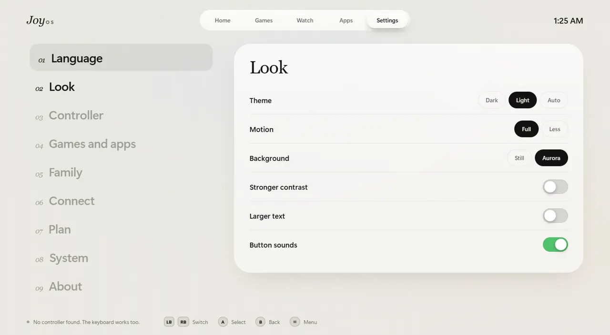
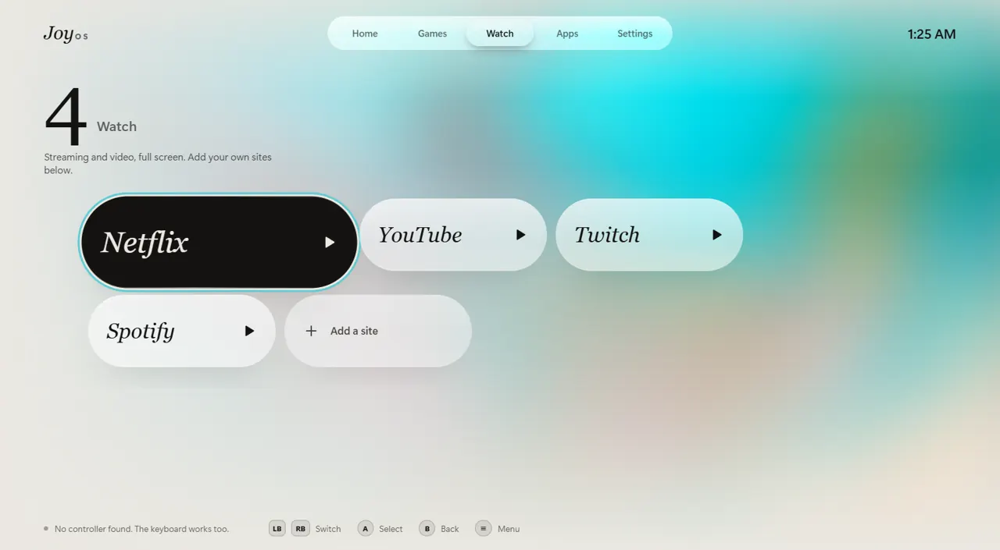

Free
Everything you need to start.
The couch screen, your games and apps, Watch, the keyboard, and the quick menu.
Download freeFor Windows 10 and 11
Pick up a controller. Play your games, open your apps, watch your shows, or turn the PC off. You never need the mouse.
Free to start. No account needed.
Press Start
Hold Start and View to come back from any game.
01Steam
02Epic Games
03GOG
04Ubisoft
05Xbox
Every game. One screen.
Any app
Turn on mouse mode and the left stick moves the pointer. The right stick scrolls. A clicks, and the on-screen keyboard appears when you need to type.


Watch
Netflix, YouTube, Twitch, and Spotify are ready with one press. Add any other site you like. Each one opens full screen, ready for the controller.
Family Plus
Give each person a PIN and a daily time limit. Pick who's playing, and JoyOS keeps count. You get a gentle buzz five minutes before time is up.
60:00
Your look
Welcome
Light, dark, or automatic with the clock. Choose larger text or stronger contrast. JoyOS speaks 13 languages, and each one reads naturally, not like a translation.
Works onWindows 10 and 11
Sign-inNo account needed
Your thingsNothing is uploaded
Crash reportsStay on your PC
Plans
Everything you need to start.
The couch screen, your games and apps, Watch, the keyboard, and the quick menu.
Download freeEverything in Free, and:
Price set at launch.
Questions
No. The keyboard and mouse work too. A controller is what makes it feel like a console.
Xbox controllers work best. Most other controllers that Windows can see also work.
No. JoyOS is an app. You can open it when you want the couch screen. If you want it to open at startup, turn that on in Settings.
No. Your settings stay on your PC. Cover art and update checks are the only things that go online.
If your games are in Steam, Epic Games, GOG, Ubisoft, or Xbox, JoyOS finds them and shows them with their cover art.
Free to start. Windows 10 and 11.